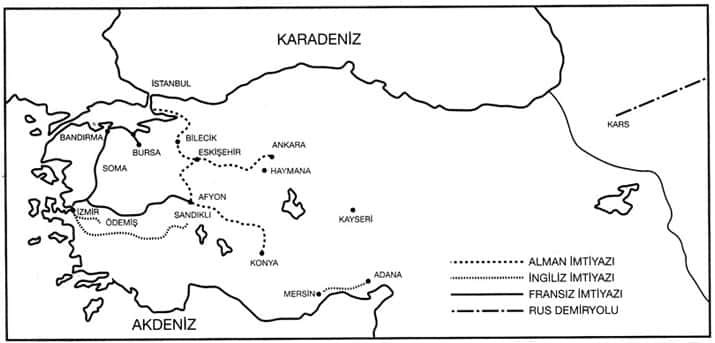
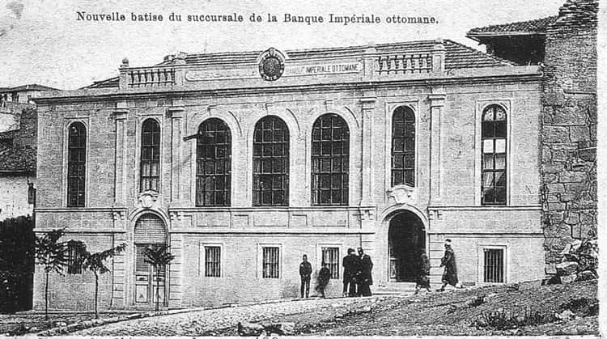
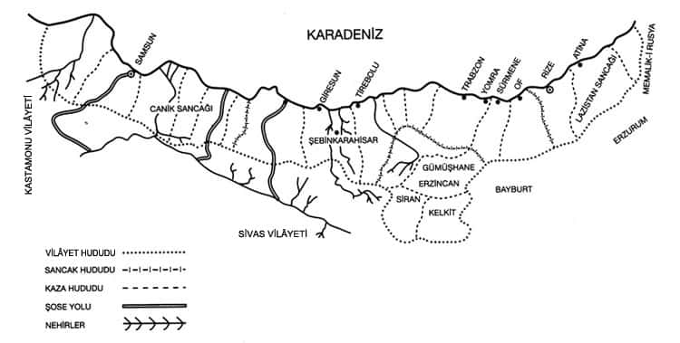

Demiryolunun Ankara ve Hinterlandındaki Etkileri Üzerine
20 Ekim 1885/1303 tarihli Ankara vilâyet gazetesinde, Ankara halkının Dahiliye Nezareti’ne ve padişaha sunduğu bir dilekçe yer alıyordu.[189] Vilâyetin muteberânından seçilen bir heyet vasıtasıyla takdim edilen dilekçede, “Medeniyetin nimetlerinden yararlanmanın, servet ve umrânın artmasının ancak demiryoluyla mümkün olacağı” belirtiliyor, daha evvelki teşebbüsün Bulgar hadisesi (1877 Savaşı) dolayısıyla sonuçsuz kaldığı ekleniyordu. Anadolu halkı uzun bir zamandır demiryoluna kavuşmak için istekliydi. Dilekçede alışılmış bir formül kullanılmıştı:

20. yüzyıl başında Anadolu demiryolu sistemi.
Bu defa padişahımız sayesinde ahâlîde terakki isteği uyanmıştır. Ezcümle Anadolu’nun orta kolunda vakî olan Ankara vilâyeti ki; vusat-ı arazice âdeta bir mülke muadil ve ziraat ve hayvancılığa müsaittir.
Bu gayretli ve iyi niyetli ahali demiryolunu memleket hayatının kaderini hızla değiştirecek bir unsur addettikleri için, “Anadolu şimendiferinin vilâyet dahilinden mürûr edecek kısmının ameliyât-ı turabiyesini (bundan sonraki toprak kazı işlemlerini) icra etmek gibi bir hidmet ve muavenetin ifâsına tarifi nâkabil bir şevk ve haheş-i fevkalâde ile hazırlanmışlardır” deniyor ve “Yol düzgün ovadan geçeceği için tünellere ihtiyaç olmayacağı, travers için gerekli ağacın etrafta bulunduğu ve yarısının ahali tarafından verileceği” ekleniyordu. Deve ile mal taşındıkça, ziraat ve ticaretin gelişemeyeceği, boş arazi ve köylerin işlenmesi için demiryolunun gerekli olduğu, vilâyette 163.811 adet nüfus-ı mükellefe (angarya ile yükümlü) bulunup, bunların hizmete âmade olduğu belirtiliyordu. Gazetede, Anadolu kıtasında şimendifer tesisinin otuz seneden beri arzu olunan mevadd-ı nâfıadan olduğu, bir mukavele imzalanırsa demiryolunun dört yılda Ankara’ya ve sekiz yılda Diyarbakır’a, on iki yılda da Bağdat’a ulaşacağı konusundaki umut tekrarlanıyordu.
Üç yıl sonra, 25 Eylül 1888’de demiryolunu İzmit’ten Ankara’ya uzatmak için Alfred Kaulla’ya bir imtiyaz verildi. 28 Kasım 1892’de, yani dilekçenin verildiği tarihten yedi yıl sona 485 km.lik bir hatla Ankara’ya ulaşıldı. Demiryolu 16 tünel, birçok köprü ve 180 km.ye ulaşan tepelerin yarılmasıyla açılan güzergâhtan hedefine ulaşmıştı. Alman sermaye ve tekniğinin bu başarısı herkesi büyülemişti. Padişah kumpanyanın isteği üzerine Şubat 1893’te Eskişehir-Konya hattı için diğer bir imtiyazı tereddüt etmeden verdi. 1896’da Konya’ya da ulaşıldı. Ancak ikinci hattın inşası ile de Ankara ve hinterlandının demiryolundan göreceği yarar bu kadarla kaldı. Yolun Konya’ya kaydırılması, Alfred Kaulla’nın 1891’deki gözlemine göre olmuştu. Ona göre, bu yol kesinlikle Kayseri’den öteye uzatılmamalıydı. Masrafı karşılayamazdı. Oysa demiryolu Bilecik’e ulaştığında Konya’dan develerle tahıl taşındığını görmüştü. Demiryolunun Konya üzerinden Mezopotamya’ya uzatılması, hem zengin tahıl merkezlerinin kontrolünü sağlayacak hem de inşaat daha ucuza mal olacaktı. Sonraları hattın Çukurova ile bağlantısının kurulmasına da İngilizler karşı çıktılar. Kısacası, Osmanlı ulaşım sistemi ülkenin coğrafyasına ve idarî gereklerine göre değil de, yabancı kumpanyaların tarımsal ürün merkezlerini ele geçirme savaşına göre biçimleniyordu. Burada otokratik modernleşmenin iki tipik temsilcisi olan I. Nikola ile II. Abdülhamid, yani St. Petersburg-Moskova demiryolunun güzergâhını, hızlı ulaşımı düşünerek dümdüz bastonla çizen Çar’la, imtiyaz avcılarının eline bakan padişah arasındaki trajik fark ortaya çıkmaktadır. Birinci yol halen iki büyük Rus metropolünü süratle bağlarken; yabancı kumpanyanın hem ucuz inşaatı sağlamak hem de tahıl toplama merkezlerine uğramak endişesi ile uzattığı Türkiye’nin iki büyük şehri arasındaki yol, işlevini tamamen yitirmek üzeredir.
Osmanlı başkentinden müstakbel Türkiye’nin başkentine uzatılan yol, yeni bir hayatla birlikte, problemler de getirmişti. Demiryolu Ankara’da bitiyordu; bu Ankara’nın hinterlandı ve doğusundaki Anadolu toprakları üzerinde kontrolcü bir merkez olma şansını yitirmesine yol açtı. İleride de göreceğimiz gibi Ankara vilâyetinin Kayseri, Kırşehir gibi sancakları bile merkezle eski usul deve taşımacılığı yoluyla bağlantı kuruyordu. Üstelik Bağdat hattının Çukurova ve kuzeyde Samsun’la (burada liman veya rıhtım tesisleri yoktu) bağlantısı olmaması, Ankara’nın önemli bir merkez olmaktan çok bir toplama istasyonu olarak kalmasına neden olacaktır. Bu durumuyla Ankara, İlhan Tekeli’nin bu dönem Osmanlı demiryolu sistemi için yaptığı bir nitelemeye, “Ağaç Modeli” deyimine tipik bir örnektir.[190] Bu demiryolu vantuzunun ucunda bulunan Ankara’da, demiryolu dolayısıyla yeni iş dallarının kurulmasından, sınaî dalların doğuş ve inkişafından çok, ihraç edilen tek tip hammadde miktarında bir artış beklenebilirdi ve nitekim de öyle olmuştur. Bu durumda uygulanan demiryolu teknolojisinin de payı vardır. Gerçi Anadolu demiryolunun inşasında daha önce İngilizlerin ve Fransızların Osmanlı ülkesinde yaptıkları demiryolu inşasına göre üstün ve etkin bir teknik, bir sürat ve başarı görülüyordu ama, bunun 19. asrın en modern teknolojisi ve en yüksek ehliyetteki demiryolu sistemini getirdiği söylenemez. Yol, ana hatta bağlanacak ikincil hatların inşası için uygun değildi. Örneğin, bu dönemde Macaristan demiryolu bakanı G. Baros’un adıyla anılan sistemde; şehir içi tramvay hatları ile demiryolunun bütünleştiği (ki bu kentin mekân organizasyonu liman ve depolama tesislerinin yer seçimi bakımından bir esneklik sağlıyordu) ve ülke içinde ana hat ile kolayca bütünleşebilecek yan hatların inşasını mümkün kılacak bir yapı gözleniyordu. Anadolu demiryollarında eskimeye başlayan bir teknoloji ve sistemin uygulanması nedeniyle taşıma kapasitesi de sınırlı kalmıştır. Öyle ki, asker ve malzeme nakli ihtiyacının arttığı Birinci Dünya Savaşı ve özellikle Kurtuluş Savaşı arasında bunun sıkıntısı çekilmiştir. Nitekim, Kurtuluş Savaşı sırasında asker taşıyan bir katar, 35 vagondan meydana geldiği için; sorumluların askerin hayatını tehlikeye soktukları gerekçesiyle İstiklâl Mahkemesi’ne sevk edilmesi söz konusu olmuştu.[191] Bir bakıma Ankara’ya ulaşan demiryolu, kısa ömürlü hastalıklı bir çocuğun doğumunu andırıyordu.
1890’larda Ankara Vilâyeti (İdarî Yapı, Nüfus, Ekonomik Durum, Şehrin Yapısı)
Demiryolunun geldiği dönemde Ankara vilâyeti, merkez Ankara, Yozgat, Kırşehir, Kayseri ve Çorum sancaklarından meydana gelmekteydi. Bu sınırlar özellikle Tanzimat’tan beri devamlı değişim geçirmektedir. 1890’larda bu dört sancak dahilinde 32 kaza, 15 nahiye ve 2971 köy vardır. Göze çarpan bir diğer nokta da, bu yörede 19. yüzyıldaki huzursuzluklar nedeniyle doğudaki vilâyetlerden mecburî iskân yoluyla getirilen ve henüz toprağa tam yerleşemeyen aşiretlerin mevcudiyetidir. Demiryolundan sonra yerleşik hale geçecek olan ve tiftikçilikle geçinen bu aşiretler şunlardır: Reşvan, Şeyh Bezenli, Yadıllı, Turkiyanlı, Mikailli, Yambekli, Keybanlı, Sufyanlı...[192] Özellikle göreceğiz ki, demiryolundan sonra hat boyuna büyük miktarda Rumeli muhacirleri de yerleştirilecektir. Bu dönemde Osmanlı nüfus tahrirlerinin halen hane esası üzerine ve hassas kayıt yöntemleri izlenmeden yapıldığını belirterek, Ankara vilâyetinin 1890’lardaki nüfus kompozisyonunu hane[193] hesabıyla şöyle verebiliriz: 256.000 İslâm, 1896 Rum, 1841 Ermeni, 5.609 Ermeni-Katolik, 109 Protestan-Ermeni, 478 Musevi. Bu dönem için kaynakların verdiği toplam nüfus 677.000 ile 700.000 arasında değişmektedir. Vilâyetin yüzölçümü de 70.000 km2 kadardır (bu nüfusun 100.000 hane kadarı İslâm, 900 hane kadarı Rum ve 6.300 hane kadarı Ermeni olmak üzere Ankara sancağı dahilindedir. (Ankara sancağının sınırları bugünkü Sivrihisar ve Mihalıçcık’ı da içermekteydi.) Ankara sancağının, klasik Osmanlı idaresinden beri merkez sancak olarak bölge üzerinde belirli bir toplayıcı ve kontrolcü fonksiyonu vardı. Demiryolundan önce Samsun iskelesi aracılığıyla Karadeniz üzerinden ticaret ilişkilerini yürütmekteydi. Sancağın merkez Ankara olmak üzere, Nallıhan, Zîr (Yenikent) ve Sivrihisar kazalarında Ermeni-Katolik nüfus hatırı sayılır bir cemaatti. Esasen Ermeniler arasında Katolisizmin yaygınlığı ve 19. yüzyılda Protestanlığın da ortaya çıkışı bölgenin Batı ile olan ilişkileri hakkında bir fikir vermektedir. Orta Anadolu bölgesinde bu dönem için tipik olan göç olayı Ankara’da da gözleniyordu. Göç olayında verimsiz tarım ve kıtlık başlıca rolü oynamaktadır. Örneğin, 1875 yılındaki kıtlık da, nüfus erozyonuna neden olan bu göçü hızlandırmıştır. Britanya Konsolosluk raporlarına göre, Keskin kazasının 42 köyünde 1873 yılında 16.990 olan nüfus, 1875’te 9.261’e inmiştir.[194] Ankara sancağı bu dönemde 16. fırka (kolordu) merkezidir ve klasik devirdeki gibi tahılla, özellikle tiftikçilikle geçinmektedir. 17. yüzyıldan beri Ankara’nın artık ham tiftik ihraç merkezi fonksiyonunu yüklendiğini biliyoruz. 19. yüzyılda da bu durum değişmeden devam edecektir. Ancak demiryolundan sonra tiftik ve tahıl üretim miktarı arasındaki oranın ulaşım sistemine göre bazı değişmeler geçirdiğini göreceğiz. 1873 yılı Britanya Konsolosluk raporları, Ankara ve civarının 176.000 sterlin tutan yıllık ihracatının 154.000 sterlininin tiftikten sağlandığını bildiriyorlar. 1882 raporlarında da durum aynıdır ve bu yıl tiftik ihracının 213.321 sterline ulaştığı kaydediliyor. Genellikle Ermeni tüccarlar İngiliz kumpanyaları adına bu işi yürütüyorlardı. Ancak 1891 yılı raporları, Almanların İngiliz tüccarın yerini almaya başladığını ve ticaretin her alanında Alman tüccarın aktif olarak rekabeti yok etmeye başladığını bildiriyordu.[195]
19. yüzyıl sonunda Ankara şehri böyle bir değişim geçirmeye başlayan bir vilâyetin merkezi olup, ilk bakışta Orta Anadolu’nun tipik fakir görünümlü şehirlerinden biri idi. Ancak kozmopolit nüfusu ve Batı ticaretine açıklığı ile diğerlerine göre farklı bazı yönleri de vardı.
Şehrin nüfusu İngiliz raporlarına göre, 1876’da 30.000 civarındadır. On yıl sonra Osmanlı sayım belgeleri bu nüfusu 50.000 civarında gösteriyor. Şehirde 5.900 civarında İslâm hanesi, 3.200 civarında Ermeni hanesi, 900 civarında Rum ve 300 kadar da Musevi hanesi vardı.[196] Bu yıllardaki Britanya konsolosları şehirde zenaat ve sanayinin yok derecesinde olduğunu, loncaların zayıflayıp ortadan kalktığını, hatta şehrin kendi giyeceğini bile üretmeyip, Osmanlı İmparatorluğu’nun diğer bölgelerinden, Tokat, Kastamonu, Merzifon ve Halep’ten develerle kumaş getirildiğini ve asıl önemlisi mavi renkli ucuz Manchester kumaşından Ankara ve civarına yılda 70.000 sterlinlik ithalat yapıldığını bildiriyorlar.[197] İngiliz kumaş sanayii, Ankara ve civarındaki tüketimin tahminen %40’ını temin ediyordu.
Britanya viskonsülü Bernham’ın 1882’de yazdığı rapora göre,[198] Müslüman nüfus çoğunlukla tarımla ve geleneksel zenaatlarla meşguldür. Ermeni ve Rum nüfus ise, daha ziyade kâtib (noter), avukat, tabip, gibi serbest mesleklerde, tiftik ticaretinde, iltizam işlerinde veya teknik zenaat dallarında faaldirler. Gayrimüslimler gerek refah ve gerekse modern hayat tarzı bakımından Anadolu’daki diğer dindaşlarına göre daha üstün durumda olmalıdır. Şehirdeki Ermeni ve Rum nüfusun kültürel yönden üstünlüğü eğitim müesseselerinde görülür. Bu dönemde şehirde birkaç ecnebi mektebi vardı. Gayrimüslimler özellikle Ankara vilâyeti dahilinde nüfusları ve iktisadî nüfuzları ölçüsünde Müslümanlarla eşit bir biçimde idareye katılmaktadırlar. Vilâyet ve kaza idarî meclisleri, temyiz dîvânı ve meclis-i belediyelerde, diğer Anadolu vilâyetlerinin tersine gayrimüslimlerin yarı yarıya üyelikler elde ettiği görülmektedir.[199] Müslümanlar içinde önde gelen zümreler ise, gene tarikat postnişinleri, vakıf mütevellileri ve ilmiyye sınıfı mensuplarıdır. Bu bakımdan Ankara’da 19. yüzyılın sonu ve 20. yüzyılın başında da Müslüman nüfusun elit tabakasının klasik devirdeki gibi değişmeden kaldığını söyleyebiliriz. Özellikle 17. ve 18. yüzyılda da Ankara’nın önde gelenlerinin ilmiyye sınıfından olduğunu biliyoruz.[200] Nitekim Rıfat Özdemir de, 1785-1840 yılları arasında Ankara eğitiminden söz ediyor ve bu yıllarda Ankara’da 26 medrese, 11 sibyan mektebi olduğunu söylüyor.[201] Ankara şehrinde dönem içinde kentsel ticarî aktiviteyi geliştirecek ve örgütlendirecek kredi kurumları gelişmemişti. Mal sandıkları her yerde olduğu gibi 1877 Harbi esnasında ve sonra maliyece adeta gasp edilmişti. 19 Şaban 1299/6 Temmuz 1882 tarihli vilâyet gazetesinde mal sandıklarının bakiye meblağını maliyeye devreden bir tebliğ bu durumu göstermektedir. Demiryolu gelince, 1893’te Bank-ı Osmanî bir şube açtı. Ancak, bu bilindiği gibi bir mevduat ve mahallî kredi kurumu olarak çalışmaktan çok, Düyûn-ı Umûmiye’nin alacaklarını toplamak ve bununla ilgili muamelatı düzenlemek gibi işleri ön plana alan bir malî kuruluş olarak çalışmıştır. Ticarî ve sınaî yatırım için kredi verdiği görülmüyordu.
Tanzimat Döneminde Ankara’da Görülen İdarî Reformlar ve Bayındırlık İşleri
Tanzimat döneminin başarılı vali ve mutasarrıfı geldiği kenti kârgir hükümet binalarıyla donatmaya çalışan, bir kışla ve hastane yaptıran, çevre merkezlerle ulaşımı sağlamak için şose yollar inşasına iâne ve angarya yoluyla gayret gösteren bir yönetici tipidir. Sanayii gelişmeyen ve nüfusu kayda değer bir artış göstermeyen bu kentlerde modern Osmanlı yöneticisi, bürokratik manipülasyonla modern bir şehircilik örneği yaratmak ve şehir dışına kışla, hastahane vs. inşa ederek kentleri eski dokusunun dışına kaydırmak çabasındadır. Bu yöneticilerin bazıları başarılı olamamış, bazıları da yönettikleri kentin ve bölgenin tarihine imarcı paşalar olarak geçmişlerdir. Bölgesinin gelişme şartlarını iyi değerlendiren Midhat Paşa, bu tip yöneticilerin en iyi örneği sayılır. Sivas valisi Halil Rıfat Paşa ve Adana ve Ankara valiliklerinde bulunan Abidin Paşa da bu gruba giren başarılı yöneticilerdendir. Abidin Paşa Ankara’ya demiryolu ulaşmadan bazı altyapısal tesisleri ve karayolu ağını tamamlamıştır. 1884-1892 yılları arasında Ankara’da valilik yapan Abidin Paşa, vilâyet gazetesinde örneği görüldüğü üzere, sık sık iâne kampanyası açarak ve halkı angaryaya koşarak vilâyet dahilinde 800 mili aşan bir şose yol ağı kurmuştu. Demiryolunun Ankara’ya ulaşacağı yıl, acele 200 mil yolu daha tamamlattı.[202] Yönetim döneminde, Gureba Hastahanesi, kışlalar, gerekli depolar, rüşdiye ve Ankara Sultanîsi de tamamlanmıştı. Özellikle demiryolu hattının güney kesiminin demiryoluna bağlanmasında bu şose yol sisteminin büyük yararı olmuştur. Ne var ki, Ankara vilâyetinin gelirler toplamında en büyük pay aşâr vergisi ve ağnam resminden geliyordu. Gider kaleminde de Dahiliye, Zabtiye ve Düyûn-ı Umûmiye’ye tahsis edilen aşâr payı en büyük miktarı teşkil ediyordu.[203] Asıl önemlisi, vilâyetin malî bilançosunda bu miktarlar artsa da, kalemlerin oranının, demiryolunun gelişinden sonra da pek değişmemesidir.

Osmanlı Bankası’nın Ankara şubesi, kartpostal.
Demiryolunun Etkileri
Demiryolu bir Alman iktisadî girişiminin sonucunda Ankara’ya ulaşmıştı. Bu olay, bugün olduğu gibi, o vakit de çeşitli yorumların yapılmasına neden olmuştu. 1891 yılında Britanya konsolosu kaleme aldığı bir raporda, Almanların civarda kolonizatör yerleştirmek için araştırma yaptıklarını bildiriyordu. Ancak konsolos, bu işin imkânsız olduğunu, boş arazilerin daima komşu köylüler tarafından gasp edildiğini ve buraya gelecek kimselerin her türlü huzursuzluğu ve uzun sürecek davaları göze alması gerektiğini belirtiyordu.[204] Kumpanya, demiryolunu bu ülkeye Pancermen Birliği’nin milliyetçi hayallerini gerçekleştirmek için getirmemişti. Zaten Anadolu Demiryolları kozmopolit sermayeli bir şirketti. O kadar ki, bu şirketin sadece sermayesi değil, yöneticileri ve mühendisleri arasında da Almanlar sanıldığının tersine büyük çoğunlukta değildi. Bu nedenle, aşırı milliyetçi Pancermen Birliği’nin üyeleri: “Alman teri ile kurulan şirketin dili bile Fransızca, mühendisler de her milletten. Yakında Almanları tamamen işten atarlarsa şaşmamak gerek...” diye feryat eden broşürler dağıtıyorlardı. Sermayenin milliyeti yoktu ve Anadolu Demiryolu Kumpanyası’nın Birinci Dünya Savaşı sırasındaki İsviçreli müdürü, Alman komutanların isteklerini tam yerine getirmediğinden sık sık onlarla çatışmaya düşüyordu.[205]
Demiryolu Anadolu’nun ortasına uzanmaya başladığı anda, Sultan Abdülhamid yönetiminin uzun zamandır tasarladığı bir proje de gerçekleşme safhasına girdi. Elden çıkan Rumeli kıtasından akıp gelen perişan muhacir kitleleri hat boyuna yerleştirilmeye başlandı. Böylece ıssız Anadolu ovaları demiryolunun da getirdiği taşıma ve sulama imkânlarıyla bir hububat ambarı haline gelmeye başladı.
Devlet muhacirlerin hat boyuna yerleşmesini teşvik ediyor, yapılan yardımlar, propaganda ve törenlerle duyuruluyordu (27 Temmuz 1908 tarihli vilâyet gazetesi, Polatlı İstasyonu civarında Tırnaksız mevkiinde 77 hane Dobruca muhacirinin yapılan evlere, vilâyet erkânının da katıldığı bir törenle yerleştirildiğini yazıyordu). Demiryolu hattının geçtiği bölge kıymetlenmişti. Bu yıllarda vilâyet gazeteleri sayısız haciz ilânı ile doludur. Borçlandırılan köylünün toprağı muayyen ellerde toplanmaya başlamıştı. Anadolu Demiryolu Kumpanyası belirli bir kredi mekanizması kurmuştu. Bundan başka, mühendis Hermann gibileri modern tarım teknolojisinin getirilmesinde ve uygulanmasında köylülere yardımcı oluyordu. Buna bir de hat boyuna yerleştirilmelerine devam edilen ve Dobruca, Bulgaristan gibi tarım tekniklerini daha iyi bilen ülkelerden gelen göçmenleri de katarsak, ilk andaki üretim artışını anlayabiliriz.
Rosa Luxembourg: “İlkel tarım teknolojisine sahip bir ülkenin taşıyamayacağı bir yük” demişti demiryolu için...[206] Bu söz Bağdat hattı için genelde doğru bir öngörüş ise de, ilk elde Ankara hattı için tersine bazı umutlar doğmuştu. Nitekim, Ankara vilâyetinin toptan tarımsal üretimine bakıldığında tiftik önde idi ama, hat boyunda, yani Ankara’nın batısında tahıl üretimi öne geçmişti ve ilerleme kaydediyordu.
1894’te demiryolunun gelişinden bir yıl sonra Britanya konsolosu, demiryolunun tarımsal üretimi %50 oranında artırdığını, bunun ürün ve arazi fiyatlarında da aynı ölçüde bir artışa sebep olduğunu yazıyor[207] (1 acre-4 dönüm toprak 5,5 ilâ 11 şilin arasında değişiyor, ama sulama yapılan yerlerde artık 2 pound civarındadır). Aşâr %10 oranında alınıyordu. Kıtlık ve savaş yıllarında bu oran %12 ve fazlasına çıkmıştır. Ancak, 1904 yılında hasat rekoru kırıldığında, demiryolu için ödenmesi gereken kilometre garantisi yükü de artık ortadan kalkmıştı ve işletme rantabl döneme girmişti. Tarımsal üretimde bu yıllarda beklenen artış gerçekleşmiş sayılabilirdi. 1893 ve 1911 arasında Ankara-Haydarpaşa hattında nakledilen tarımsal ürün miktarında şu artış gözlenmektedir[208] :
Ankara’dan Haydarpaşa’ya
| Hububat | Yumurta | Meyva | |
| 1893 | 51.389 ton | 469 ton | 2.581 ton |
| 1911 | 262.145 ton | 5.070 ton | 5.444 ton |
Demiryolu sayesinde Ankara ve civarında özellikle ucuz ve mübrem tüketim maddelerinin kullanımında da bir artış gözlendi. Aynı yıllar itibariyle şeker, petrol ve manifaktür nakliyatındaki artış şu miktara ulaştı:
Haydarpaşa’dan Ankara’ya
| Şeker | Petrol | Manifaktür | |
| 1893 | 775 ton | 1.434 ton | 1.847 ton |
| 1911 | 10.987 ton | 8.144 ton | 5.305 ton |
İlk elde bazı toprak sahipleriyle eskiden beri ticareti elde tutan komisyoncu tüccarın servetinin arttığı görülecektir. Bir bakıma demiryolunun geliştirdiği ticaret, yeni müteşebbis gruplar yaratacak bir nitelik ve hacme ulaşamamıştı. Dış ticaretin bağlandığı merkez ise değişmekteydi. 1893’te manifaktürün en az %40 kadarı İngiltere’den geliyordu. Ama Amerika Birleşik Devletleri konsolosunun 1897 yılı ticarî raporuna göre, İngiliz ticareti, Alman ticareti karşısında üçte bir nispetine düşmüştür.[209] Ucuz ve kalitesiz Alman-Avusturya malları Orta Anadolu pazarını istilâ etmişti. Bu dönemde sof endüstrisi çoktan iflâs etmişti. Demiryoluna rağmen Ankara’da endüstri olarak nitelendirilecek tek şey, buharlı bir değirmenle çalışan ve günde 20.000 kilo kadar un üreten fabrika idi. Ankara, Balkan ve Birinci Dünya Savaşı’na sanayi olarak istasyon civarındaki bu küçük fabrika ile giriyordu.
Demiryolu ile derhal 1893’te Osmanlı Bankası’ndan başka (ki banka yatırım için kredi sağlamaktan çok, kısa vadeli krediler veriyordu ve asıl görevi Düyûn-ı Umûmiye’nin alacaklarını tahsil için gerekli işlemleri yerine getirmekten ibaretti) kurulan iki sigorta şirketi şubesi de daha çok demiryolu taşımacılığına konu olan malların sigortasıyla ilgileniyor, ev, eşya ve ticarethanelerin sigortası gibi işlemlerle ilgilenmiyordu.
Buna rağmen dış dünyada, demiryolu gördüğü işlev bakımından, bazı huzursuzluklar yaratmaktan ve hücuma uğramaktan kurutulamadı. Nitekim 1898’de, Haydarpaşa garı ve liman inşaatının imtiyazı Almanlara verilirken, Çarlık Rusyası’nın ünlü şoven gazetesi Novoye Vremya, “Osmanlı İmparatorluğu’nun paylaşılmasında aslan payını Almanların aldığını” ilân ediyordu.[210] Anadolu demiryolu Şark’a doğru ilerledikçe, dış dünyada olumsuz tepkiler yaratıyor ve endişe kaynağı haline geliyordu. Daha önce Ege bölgesindeki İngiliz ve Fransız sermayeli demiryolu şirketlerinin tersine Anadolu demiryolları tarım kredileri vermek, sulama tesisleri kurmak gibi tarımsal teknolojiyi bir ölçüde değiştirecek atılımlara giriştiğinden bu tepkiler doğaldı. Ankara’da bir çoban mektebi ve numune çiftliği kurulmuş, ilk tarım uzmanlarının da yetiştirilmesine başlanmıştı. İstanbul, Anadolu demiryolu sayesinde bir müddetten beri ithal malı buğdayla beslenmekten kurtulmuş, yani Rusya ve Bulgaristan’dan yapılan buğday ithaline son verilmişti. Bu nedenledir ki, Çarlık Rusya matbuatının feryadında salt yayılmacı bir siyasetin değil, ekonomik endişenin rol oynadığı açıktır. İstanbul’daki büyükelçilik başkâtibi Çarikov, Anadolu demiryolları üzerine kaleme aldığı kitapta, Almanya’nın bu yolla, mamulâtını İran ve Afganistan’a sokup, bu bölgelerdeki Rus ticaretini yok edeceğini, Türkiye’nin ise ziraî mahsullerini Avrupa’ya naklederek, Rusya’nın tahıl ticaretine darbe indireceğini ileri sürüyordu. Gerçekten de 1880’lerde Osmanlı ticaretinin %9’u Rusya ile yapılıyordu. İstanbul Rusya’dan yılda 65.000 ton un alıyordu. Daha demiryolu Ankara ve Konya’ya ulaştığı an bu ticaretin tamamen kesildiği görüldü. Çarikov: “Şimdi bütün Avrupa’ya milyonlarca put Mezopotamya buğdayı ve diğer tarım ürünlerinin ulaştığını düşünün, halimiz ne olur?” diye soruyordu.[211]
Demiryolunun Ankara’da kör bir nokta halinde kalması, hat boyunda ve Ankara’nın doğusunda kalan hinterland arasında tarımsal üretimde bir farklılaşma (ihtisaslaşma) meydana getirdi. Hat boyunda hızla tarım üretimi artarken, demiryoluyla bağlantısını, Ankara istasyonuna işleyen deve kervanlarıyla sağlayabilen Ankara’nın doğusu, güneyi ve kuzeyindeki bölgelerde tiftik üretimi artmakta ve önemini korumaktaydı. Hatta bu bölgelerde eskiden olduğunun tersine koyunculuk gerileyip, keçi sayısında artış görülmekteydi. Örneğin, Ayaş kazası dahilinde hayvan sayısında şu değişmeyi görüyoruz:
| 1881 yılı | 1904 yılı | |
| Keçi | 54.778 | 62.222 |
| Koyun | 31.148 | 22.088 |
Aynı dönemde Beypazarı’nda keçi sayısında 50.442’den 75.043’e, Nallıhan’da 56.723’ten 69.247’e artış vardır. Hayvancılığın temel uğraş olduğu Haymana’da ise, keçi adedinde aynı dönemde on misli artış görülmektedir (maamafih görünen bu sayısal artışta Düyûn-ı Umûmiye idaresinin etkin bir kayıt-envanter yapmasının rolü de vardır). Gene, Kırşehir sancağı da, Ankara istasyonu aracılığıyla ticarete katılıyordu ve tiftik üretiminde artış vardı. Buna karşılık hat boyu merkezlerde hayvancılıkta bir gerileme ve tarım ürünlerinde bir artış görülmektedir. Nitekim, hat boyundaki iki merkezin, Mihalıççık ve Sivrihisar’ın hayvancılık durumuna aynı yıllar zarfında göz attığımızda, hayvan sayısında gerileme ve tahıl üretiminde artış gözlemlenmektedir.[212]
Demiryolu tarımsal gelirler ve vergi gelirlerini artırdı. Kuşkusuz bunda Düyûn-ı Umûmiye idaresinin kurduğu etkin malî kontrol ve örgütlenmenin de etkisi vardı. Örneğin, 1882 yılında Ankara vilâyetinin toplam ağnam bedeli (koyun vergisi) 4.806.000 Osmanlı kuruşu iken, 1904 yılında bu miktar 11.121.702 kuruşa yükseldi. Bununla birlikte, vilâyetin artan gelirinin; dahiliye ve zabtiye giderlerinin artışı dolayısıyla eğitim ve sağlık hizmetlerine aynı oranda bir yansıması olmadı. Zaten ikinci büyük gelir kalemi olan aşâr resmi olduğu gibi Düyûn-ı Umûmiye tarafından tahsil ediliyordu. Memleketin hayatında, yeni yatırımlar yapılmasını veya bazı hizmetlerin geliştirilmesini sağlayacak bir zenginleşme söz konusu değildi. Fakat demiryolu ilk anda asayişin düzelmesine yardım etti ki, bu bile hükümetin ve halkın umutlarının ötesinde bir gelişme idi. 1882 ve 1904 yıllarının vilâyet bütçelerindeki gelir kalemleri arasında bir karşılaştırma yapmak bu konuda bir fikir verecektir.[213]
| 1881 yılı bütçesinde | 1904 yılı bütçesinde | |
| (Kuruş olarak) | (Kuruş olarak) | |
| Aşâr bedeli | 16.078.401 22.557.415 | 22.557.415 |
| Ağnam resmi | 8.750.839 11.021.702 | 11.021.702 |
Görüldüğü gibi tarım gelirlerinde belirli bir artış gerçekleşmekteydi.
19. yüzyıl boyu Ankara’ya gelen her seyyah, tozlu dar sokaklar ve harap evlerden meydana gelen fakir bir Anadolu şehrinden söz eder. Abidin Paşa gibi birkaç becerikli yöneticinin şehrin periferisinde kurduğu vali konağı, mektep ve hastahane gibi resmî binalar ile tipik görünümü tamamlanan bu Anadolu şehrinde, demiryolu mekân organizasyonunda bir değişiklik yaratmadı. Abidin Paşa döneminde iâne kampanyası ile tamamlanan Ankara Sultanîsi, Hamidiyye Sanayi Mektebi, Gureba Hastahanesi gibi binalardan başka, şehrin en modern binası Taşhan’ın bir bölümündeki “Hotel Angora”, Ankara’ya gelen demiryolunun dış dünyadan getirdiği temel hayat tarzı değişikliğini simgeliyordu.
Ankara istasyonunun hinterlandıyla bağlantısı eskiden olduğu gibi deve kervanlarıyla sağlanıyordu. Demiryolu kumpanyasının Kayseri, Kırşehir, Yozgat gibi merkezlerde ve giderek diğer kasabalardaki ajanları aracılığıyla demiryoluyla sevk edilmek amacıyla buralara getirilip götürülen mallara, demiryolu ulaşımında %22’lik bir tenzilât uyguladığını görüyoruz.[214] Tren, Ankara’dan İstanbul’a, Eskişehir’de geceleyerek iki günde ulaşıyordu. Burada yolcular paralı iseler kumpanya tarafından imtiyazla bir Almana verilen otelde, parasızlarsa civardaki hamamda konaklarlardı. Refik Halid’in deyimiyle, Alman genel direktör, gece işlemeyen trenin yolcularına vagon, restoran ve yataklı vagon gibi şeyleri lâyık görmüyordu.[215]
Demiryolunun Ankara’da bitişinin olumsuz bir etkisi Kayseri’deki sınaî potansiyelin gelişememesinde görülür. Demiryolundan önce güherçile, deri, halı gibi mamulâtını Karadeniz üzerinden sevk eden Kayseri tüccarı; demiryolundan sonra Ankara istasyonunu sevkıyat için kullanmaktadır. Ancak deve ulaşımının pahalılığı dericilik ve halıcılık dalındaki küçük endüstrinin daha büyük ve modern boyutlara ulaşmasını engellemektedir. 1908 yılı istatistiklerine göre, Kayseri’de 135.000 tabaka deri debbağhanelerde hazırlanıp, bunun 86.000 adedi ihraç edilmektedir. Gene 3.325 adet halı tezgâhında 3.800 işçi çalışmaktadır.[216] Bunun gibi bir hayli pastırma imalâthanesi ve bir de güherçile fabrikası vardır. Bütün bunlar hepsi küçük ve insan örneğinin yoğun olarak kullanıldığı ilkel tesislerdir. Ankara’da bile önemli bir sanayi gelişememiştir (hepsi, 1 un fabrikası, 9 kiremithane, 7 yağhane). Anadolu demiryolu bütünleşemeyen bir demiryolu sistemi olduğundan, ülkenin her tarafında olduğu gibi, Ankara’da da belirgin bir sınaî atılım yoktu.
Geleneksel bir toplum yapısındaki ilk çatlamalardan belki de birincisi, servet sahibi sınıftaki değişiklikti. Ankara’ya gelen demiryolunun kentin ve bölgenin hayatında köklü değişiklikler yaratmadığının bir göstergesi de, şehrin ve bölgenin eski zengin ve nüfuzlu grubunun değişmeden kalmasıdır. 1914 Ağustosu’nda Birinci Büyük Savaş patlayıp, Osmanlı İmparatorluğu’nda da seferberlik ilân edilince bütün valiler gibi, Ankara valisi de ilk elde vilâyetin en zengin kimselerinden ordu için teberruda bulunmalarını isteyerek kampanyayı açtı ve teberruda bulunan bu zevatın isimleri ve yaptıkları bağış vilâyet gazetesinde ilân edildi.
Muteberân-ı vilâyet değişmeyen bir kompozisyondaydı. Hacı Bayram-ı Velî dergâhı mütevellisi ve türbedârı listenin başında yer alıyordu ve ilk elde Ankara İttihad ve Terakki Cemiyeti Heyeti’nden çok daha fazla bir miktarda bağış yapmıştı. Arkadan Ankara muteberânından Andon Hevalas Efendi, Konstantinoğlu Konstantin Efendi, Bağdasaroğlu Agob Efendi, Feslioğlu Corci Efendi gibi tiftik ticareti ve iltizamla uğraşan zenginler ve Mihalıçcık’ın tahıl ticareti yapan bazı eşrafı en çok para ve yük hayvanı bağışlayan kimseler olarak yer alıyordu.[217] Önemli bir bankacılık ve sermaye hareketinin bu dönem Ankara’sında göze çarpmadığını biliyoruz. Ankara inşaatçılıkla, borsa oyunlarıyla, hatta karaborsa ve ithal malı istifçiliğiyle zengin olanların bulunduğu, banka ve şirket yöneticilerinin itibar gördüğü bir kent değildi. Şehir gene geleneksel yapısı, eski görenekleri ve aynı fakir ve zengin gruplarıyla yaşamaya devam ediyordu. Demiryolunun gelişinden otuz yıl sonra, Ankara yeni Türkiye’nin başkenti olduğunda, eskisi gibi tozlu dar sokakları, harap evleri, kıt iş imkânları ve boğucu atmosferiyle küçük bir Orta Anadolu şehriydi.
Anadolu’nun ortasına uzanan demiryolu bir koldan Konya’ya ve Ereğli’ye, öbür koldan Ankara’ya kadar uzanıp kör nokta halinde kalmıştır. Bu iki noktadan kuzeyde Samsun’a, güneyde ise Mersin limanı aracılığıyla Akdeniz’le bağlantı kuramayan bu hattın, ne daha fazla ziraî üretimi ne de manifaktür ve küçük sanayi üretiminin gelişmesini teşvik edebileceği açıktı. İkincil demiryolu hatlarının kurulamamasından dolayı, bütün Osmanlı ülkelerinde olduğu gibi, deve kervanlarıyla demiryolu vazgeçilemez bir biçimde birbirlerini bütünlemeye devam ettiler. 20. yüzyılın ortalarında işlevini yitirmeye başlayacak bu yolun ilk anda idarî merkeziyetçiliğin güçlenmesi, bürokrasinin kontrolünün büyümesinde etkileri görüldü. 1893 kışının ortasında Ankara’ya ulaşan demiryolunun, bu şehrin ve Türkiye’nin tarihindeki olumlu rolü, demiryolu ulaşımı dolayısıyla Kurtuluş Savaşı’nın ve yeni kurulan Cumhuriyet’in merkezi olarak seçilmesini sağlamış olmasıdır.

Trabzon Vilâyeti haritası.